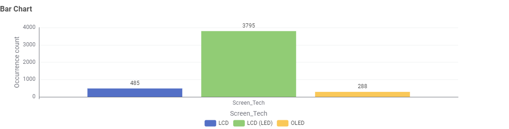
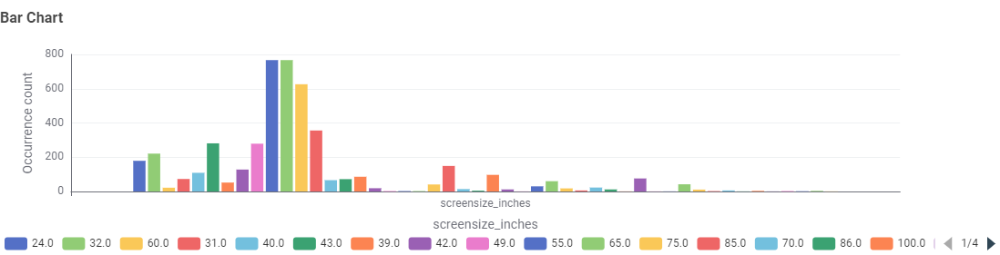
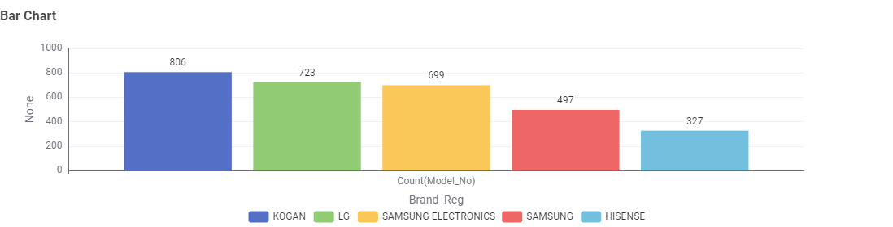
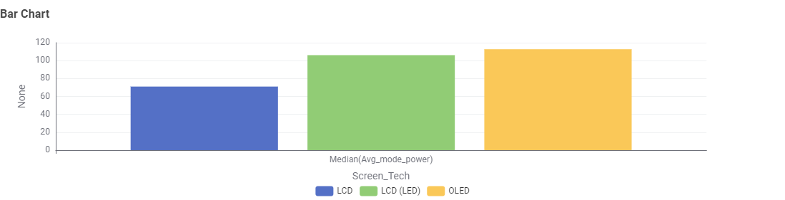
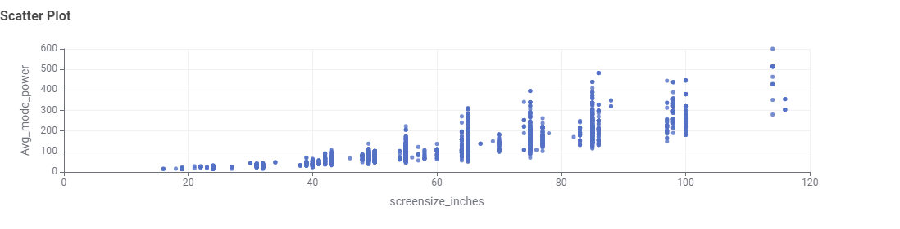
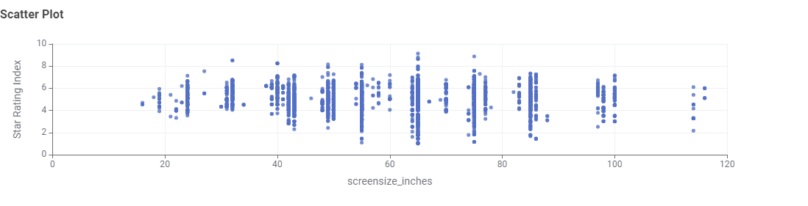
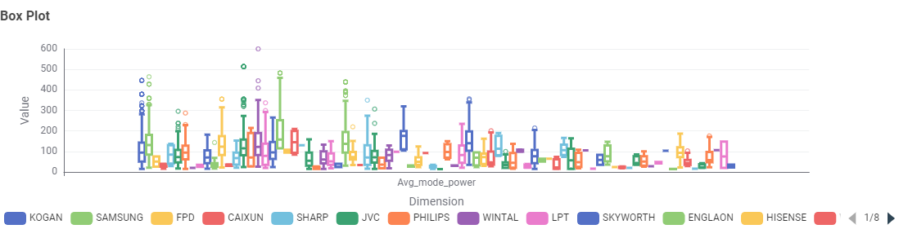

TV Energy Ratings in Australia
In Australia, televisions are required to display an Energy Rating Label. This helps consumers compare the energy efficiency of different models. Modern LED and OLED screens are generally more efficient than older technologies, but larger screen sizes still draw significant power.
Reading the energy label
Australia's Energy Rating Label shows a star rating (1 to 6 stars) and an estimated yearly energy use in kilowatt-hours, based on about 10 hours of viewing a day. More stars means less energy used.
TV Energy Insights: Data Story
This section presents findings from the Australian Government’s Television Energy Rating dataset. The aim is to help Australian consumers make informed decisions about technology, size, brand, and efficiency.
Question 1: What types of TV screen technologies are currently available in Australia, and which are the most frequent?
Screen technologies available: LCD, LCD (LED), and OLED.

LCD (LED) is the most frequent technology, followed by LCD, with OLED the least common. This means LED-backlit LCD screens are the dominant TV technology in this dataset.
Question 2: What screen sizes are available, and which are the most frequent?

Screen sizes range from 16" to 116", and most frequent size is the 65".
Question 3: Which brands have the largest number of models?

Kogan has the largest number of TV models in the dataset.
Question 4: Which type of screen technology consumes the least amount of power?

LCD screens consume the least amount of power, followed by LCD (LED) and then .
Question 5: What is the relationship between screen size and power use?

There is a positive correlation between screen size and power use, meaning larger screens tend to consume more power.
Question 6: What is the relationship between star rating and screen size?

There is a weak negative correlation between star rating and screen size, suggesting that larger screens may not necessarily be rated higher.
Question 7: Are there differences in power consumption between brands?

There are differences in power consumption between brands, with some brands having models that consume significantly more or less power than others.